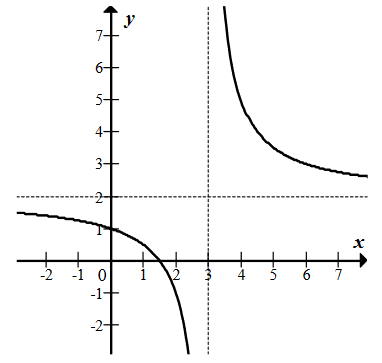
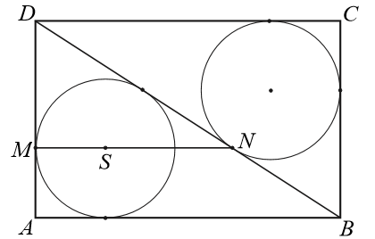

Matura 2016 maj PR
W rozwinięciu wyrażenia \((2\sqrt{3}x+4y)^3\) współczynnik przy iloczynie \(xy^2\)
jest równy
A.\( 32\sqrt{3} \)
B.\( 48 \)
C.\( 96\sqrt{3} \)
D.\( 144 \)
C
Wielomian \(W(x)=6x^3+3x^2-5x+p\) jest podzielny przez dwumian \(x-1\) dla \(p\)
równego
A.\( 4 \)
B.\( -2 \)
C.\( 2 \)
D.\( -4 \)
D
Na rysunku przedstawiono fragment wykresu funkcji homograficznej \(y=f(x)\), której
dziedziną jest zbiór \(D=(-\infty ,3)\cup (3,+\infty )\).  Równanie \(|f(x)|=p\) z niewiadomą \(x\) ma dokładnie jedno
rozwiązanie
A.w dwóch przypadkach: \(p=0\) lub \(p=3\).
B.w dwóch przypadkach: \(p=0\) lub \(p=2\).
C.tylko wtedy, gdy \(p=3\).
D.tylko wtedy, gdy \(p=2\).
B
Funkcja \(f(x)=\frac{3x-1}{x^2+4}\) jest określona dla każdej liczby rzeczywistej
\(x\). Pochodna tej funkcji jest określona wzorem
A.\( f'(x)=\frac{-3x^2+2x+12}{(x^2+4)^2} \)
B.\( f'(x)=\frac{-9x^2+2x-12}{(x^2+4)^2} \)
C.\( f'(x)=\frac{3x^2-2x-12}{(x^2+4)^2} \)
D.\( f'(x)=\frac{9x^2-2x+12}{(x^2+4)^2} \)
A
Granica \(\lim_{n \to \infty} \frac{(pn^2+4n)^3}{5n^6-4n}=-\frac{8}{5}\). Wynika
stąd, że
A.\( p=-8 \)
B.\( p=4 \)
C.\( p=2 \)
D.\( p=-2 \)
D
Wśród \(10\) tysięcy mieszkańców pewnego miasta przeprowadzono sondaż dotyczący
budowy przedszkola publicznego. Wyniki sondażu przedstawiono w tabeli.
Oblicz prawdopodobieństwo zdarzenia polegającego na tym, że losowo wybrana osoba, spośród
ankietowanych, popiera budowę przedszkola, jeśli wiadomo, że jest mężczyzną. Zakoduj trzy pierwsze
cyfry po przecinku nieskończonego rozwinięcia dziesiętnego otrzymanego wyniku.
| Badane grupy | Liczba osób popierających budowę przedszkola | Liczba osób niepopierających budowy przedszkola |
| Kobiety | 5140 | 1860 |
| Mężczyźni | 2260 | 740 |
\(p=0{,}7533333...\)
Dany jest ciąg geometryczny \((a_n)\) określony wzorem
\(a_n=\left(\frac{1}{2x-371}\right )^n\) dla \(n\ge 1\). Wszystkie wyrazy tego ciągu są dodatnie.
Wyznacz najmniejszą liczbę całkowitą \(x\), dla której nieskończony szereg \(a_1+a_2+a_3+...\) jest
zbieżny.
\(187\)
Wykaż, że dla dowolnych dodatnich liczb rzeczywistych \(x\) i \(y\) takich, że
\(x^2+y^2=2\), prawdziwa jest nierówność \(x+y\le 2\).
Dany jest prostokąt \(ABCD\). Okrąg wpisany w trójkąt \(BCD\) jest styczny do
przekątnej \(BD\) w punkcie \(N\). Okrąg wpisany w trójkąt \(ABD\) jest styczny do boku \(AD\) w
punkcie \(M\), a środek \(S\) tego okręgu leży na odcinku \(MN\), jak na rysunku.  Wykaż, że \(|MN|=|AD|\).
Wyznacz wszystkie wartości parametru \(a\), dla których wykresy funkcji \(f\) i
\(g\), określonych wzorami \(f(x)=x-2\) oraz \(g(x)=5-ax\), przecinają się w punkcie o obu
współrzędnych dodatnich.
\(a\in \left(-1;\frac{5}{2}\right)\)
Rozwiąż nierówność \(\frac{2\cos x-\sqrt{3}}{\cos^{2} x}\lt 0\) w przedziale
\(\langle 0,2\pi \rangle \).
\(x\in \left ( \frac{\pi }{6}; \frac{\pi }{2}\right )\cup \left (
\frac{\pi }{2}; \frac{3\pi }{2}\right )\cup \left ( \frac{3\pi }{2}; \frac{11\pi }{6}\right )\)
Dany jest trójmian kwadratowy \(f(x)=x^2+2(m+1)x+6m+1\). Wyznacz wszystkie
rzeczywiste wartości parametru \(m\), dla których ten trójmian ma dwa różne pierwiastki \(x_1\),
\(x_2\) tego samego znaku, spełniające warunek \(|x_1-x_2|\lt 3\).
\(m\in \left ( -\frac{1}{6}; 0 \right )\cup \left (4;\frac{9}{2} \right
)\)
Punkty \(A=(30,32)\) i \(B=(0,8)\) są sąsiednimi wierzchołkami czworokąta \(ABCD\)
wpisanego w okrąg. Prosta o równaniu \(x-y+2=0\) jest jedyną osią symetrii tego czworokąta i zawiera
przekątną \(AC\). Oblicz współrzędne wierzchołków \(C\) i \(D\) tego czworokąta.
\(D=(6,2)\), \(C=\left (\frac{8}{3}, \frac{14}{3} \right )\)
Rozpatrujemy wszystkie liczby naturalne dziesięciocyfrowe, w zapisie których mogą
występować wyłącznie cyfry \(1\), \(2\), \(3\), przy czym cyfra \(1\) występuje dokładnie trzy razy.
Uzasadnij, że takich liczb jest \(15360\).
W ostrosłupie prawidłowym czworokątnym \(ABCDS\) o podstawie \(ABCD\) wysokość jest
równa \(5\), a kąt między sąsiednimi ścianami bocznymi ostrosłupa ma miarę \(120^\circ \). Oblicz
objętość tego ostrosłupa.
\(\frac{500}{3}\)
Parabola o równaniu \(y=2-\frac{1}{2}x^2\) przecina oś \(Ox\) układu współrzędnych
w punktach \(A=(-2,0)\) i \(B=(2,0)\). Rozpatrujemy wszystkie trapezy równoramienne \(ABCD\),
których dłuższą podstawą jest odcinek \(AB\), a końce \(C\) i \(D\) krótszej podstawy leżą na
paraboli (zobacz rysunek). Wyznacz pole trapezu \(ABCD\) w zależności od pierwszej współrzędnej
wierzchołka \(C\). Oblicz współrzędne wierzchołka \(C\) tego z rozpatrywanych trapezów, którego pole
jest największe. 
\(P(x)=4-x^2+2x-\frac{1}{2}x^3\)
\(C=\left (\frac{2}{3}, \frac{16}{9} \right )\)
\(C=\left (\frac{2}{3}, \frac{16}{9} \right )\)